晨间验收报告
本报告区分本地可见、验收通过和已推送。仅在工作分支修改，不合入 main。工作进行中，以下状态随每个阶段更新。
进度总览
| 阶段 | 状态 | 提交 / 同步 |
|---|---|---|
| 0 同步与基线 | 完成 | 2298826 起点已核对 |
| 1 标题安静区 / 天平降权 | 完成 | f3ea750 · 已推送并核对一致 |
| 2 硬币循环 | 完成 | feat(ui): coin toss loop across the liquid balance · 已推送并核对一致 |
| 3a 投资工作台 | 完成 | 171842c · 已推送并核对一致 |
| 3b 店主工作台 | 完成 | d96adfd · 已推送并核对一致 |
| 4 静态演示版 | 完成 | c77807e / 0349012 · 已推送并核对一致 |
| 5 收益与回撤调查 | 完成 | 1e512e4 · 已推送并核对一致 |
| 6 跨浏览器 | 跳过 | 未安装；未下载 |
| 7 旧样式清理（可选） | 跳过 | 仍依赖旧布局；未改引用 |
打开检查版本
以下预览在这台电脑运行，演示数据只存在于当前页面。点击首页进入，仍先展示 K 与硬币，再进入工作台。
本地链接不能发给其他电脑直接访问。队友请用公网演示：lixjanus526-art.github.io/finance-lab-demo（GitHub Pages，静态构建，只含合成数据）。手机滑轮预览在 /preview/，尚待确认。
0 同步与基线
已拉取远程最新代码，包含手机两行标题修复。check / test 46/46 / smoke 全通过；现有 UI 35组、首页三尺寸、catalog 三尺寸基线通过。上一轮草稿备份后恢复已提交正式代码，未动用户保留目录。原始日志：chenchen/artifacts/overnight/stage0.json。
1 标题安静区 / 天平降权
标题安静区、点击立即恢复全亮、1.2秒回落、0.6px呼吸与手机常驻提示完成。check / 46项test / smoke、explore / liquid / landing / static 三尺寸、catalog旧基线全部通过。
2 硬币循环
Claude 接手完成。回落偶发超时的原因已确认：浏览器约 20fps 时旧公式只按 80% 速度回落，满液位回到 34% 需约 24 秒，紧贴 25 秒断言；改为按真实经过时间回落后实测 16.8 秒，CPU 降速 6 倍仍为 16.9 秒，未放宽断言。硬币落点改用与容器相同的上抬几何，不再按旧的下沉模型。check / 46项 test / smoke、liquid（连续两次）、coin-toss、explore、landing、workbench 两流程、static 三尺寸、catalog 与 f3ea750 基线全部通过。
3a 投资工作台
投资页三尺寸完整流程、步骤导航、唯一焦点、静态玻璃预算、减弱动态、axe通过；check / 46项 test / smoke、既有UI与catalog旧基线均通过。截图：investment-data、investment-result 桌面与手机。
3b 店主工作台
店主页缺口重点、账单 / 现金 / 成本步骤和纵向布局已交付。check / 46项 test / smoke、两工作台三尺寸流程、35组既有UI、catalog基线通过。金额不变，后端未改。
4 静态演示版
静态演示已完成：在浏览器内复用原计算代码，三尺寸核心流程与金额、SHA-256、导出和错误状态均与服务版核对。补修入口图标404，并加入延迟跳转回归。静态产物未发布到公网，刷新会重置页面会话。
5 收益与回撤调查
调查确认两项指标独立计算。7点窗口起点最高、终点最低，导致值相同；原函数反例输出+5%/-10%。文档列出代码位置、数据与后续方案，未改公式。
6 跨浏览器
本机 Playwright Firefox / WebKit 可执行文件均不存在。仅覆盖本机 Chrome，不能宣称已通过跨浏览器检查。
7 旧样式清理（可选）
只在隔离浏览器临时禁用两份旧样式：三尺寸下投资页13个、店主页63个被测节点变化。取消引用不满足画面不变门槛，因此保持正式文件不变。
首页与标题安静区

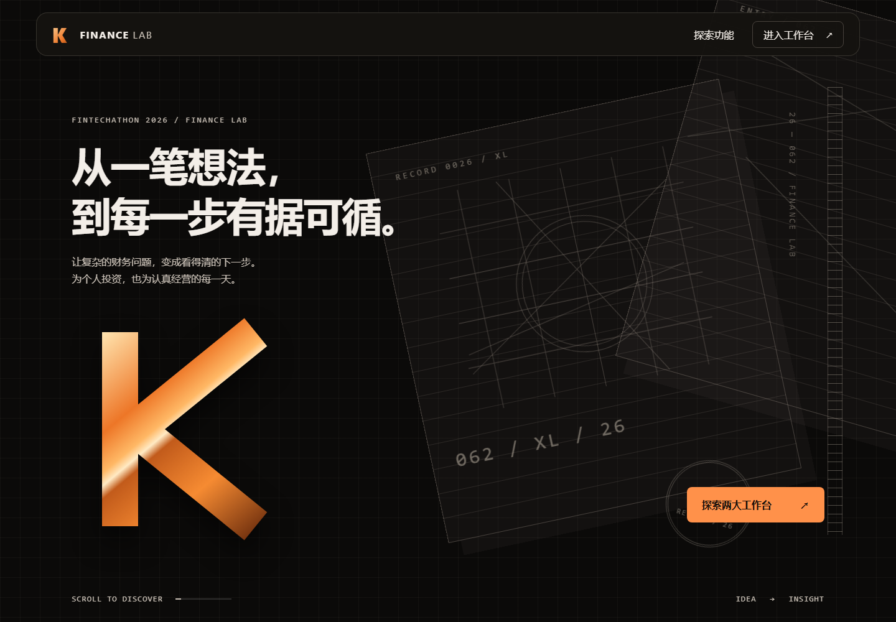

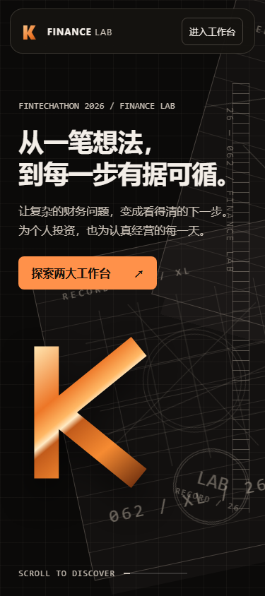

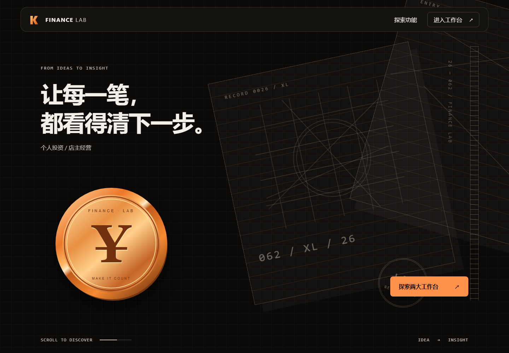

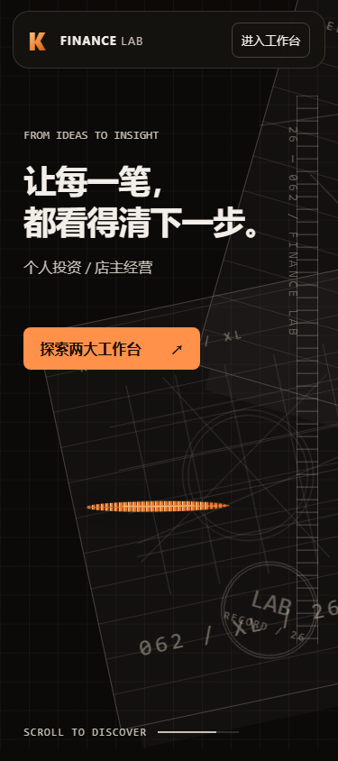

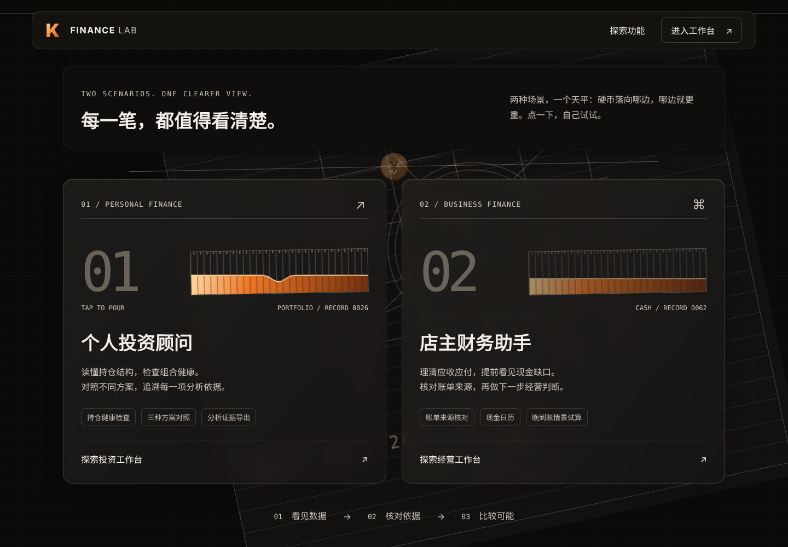

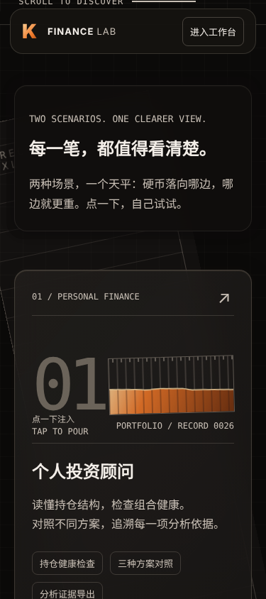
工作台与结果区

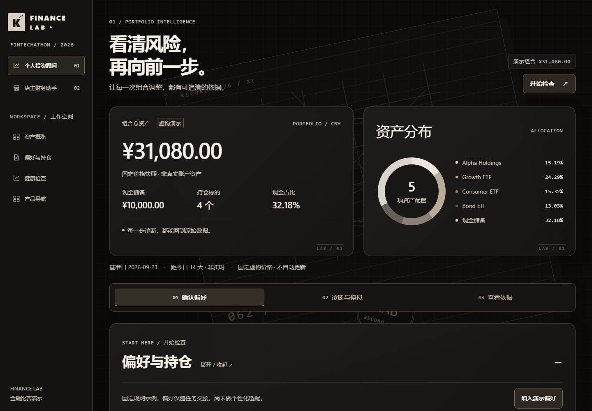

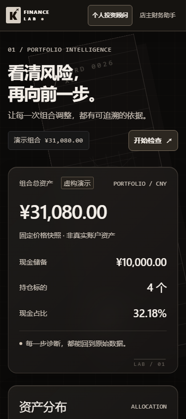

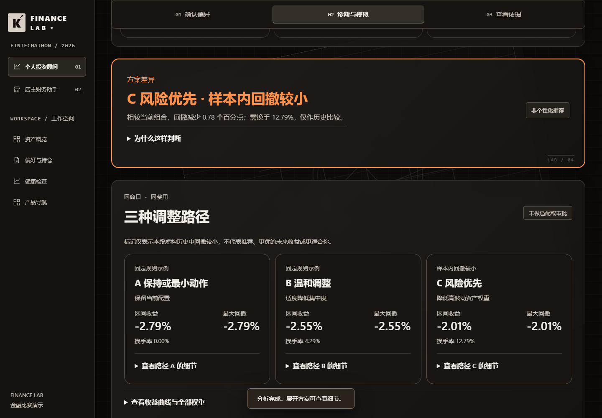

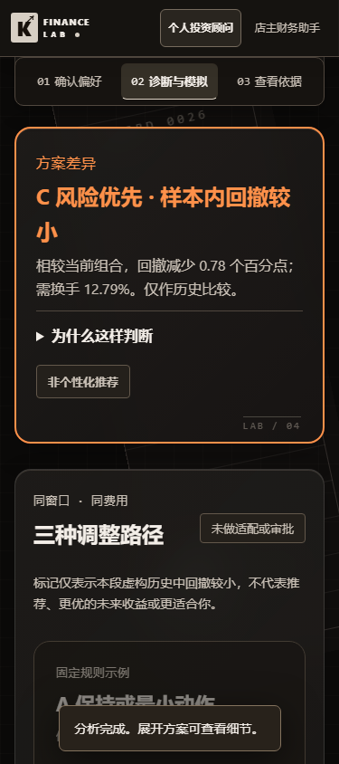

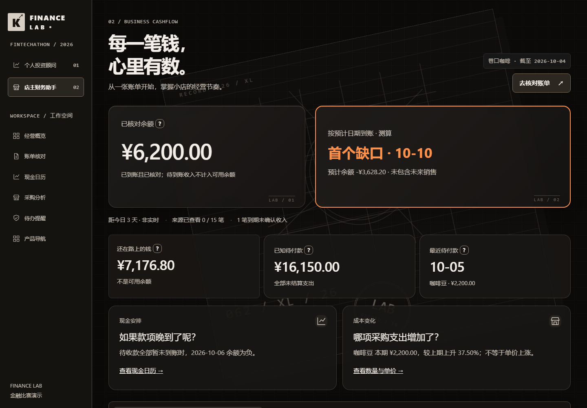

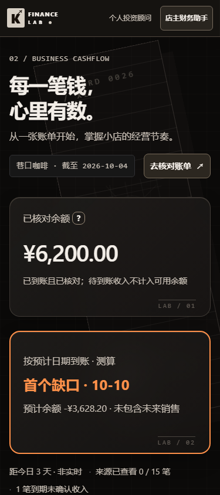
硬币循环：轨迹与停止状态
三尺寸均验证 9 次落入构成 4 个来回；点击暂停后恢复，不重置次数。截图展示瞬间，次数以完整播放检查为准。


请你重点验收的 5 件事
- 首页手机两组标题各两行，按钮始终在文字下方；滚动时标题不重叠。
- 滚动到功能区，先看到标题；手机注入提示常驻，点击能加液体，满时只轻抖。
- 等待两侧开场注水完成：硬币 01→02→01 为一个来回，共四个；中途点击容器，停手超过 4 秒并恢复平衡后继续，最终不重播。手机需把两张卡都滚入视口一次。
- 打开工作台：分别完成健康检查和账单提醒，检查步骤定位、风险重点、金额准确。
- 打开静态版：使用静态站点进入两条流程；它是本地合成数据演示，刷新会重置会话。
保守决定与已知边界
- 硬币采用分段抛接：桌面先升至空白通道，再横向飞行、落下；手机沿左侧空白通道上下抛接。以不遮挡标题和入口为优先，请重点验收手感。
- 液体活动时立即全亮，停止后 1.2 秒降至 60%；满足 200ms 内响应，避免过渡采样不稳定。
- 旧样式仍被部分布局依赖，保留引用；取消引用会改变已验收画面，未提交这项可选清理。
- 本机未安装 Firefox / WebKit 测试浏览器，按要求未下载；本轮验证覆盖 Chrome，不能宣称全浏览器通过。
- 静态演示只使用合成数据，当前页面刷新后重置会话。没有新增登录、真实账户、持久化数据库或自动交易。
- 公网演示放在个人公开仓库 finance-lab-demo 的 GitHub Pages，只是静态构建产物，不含后端、真实账户或域名购买；团队仓库仍是唯一源码。
- 收益与回撤相同已有计算证据，未擅改公式或样本窗口。阅读完整调查。
5 道小测验
1. 本次改动在哪个分支？ A main B codex/kosx-landing-glass
答案 B。不会合入 main 或强制推送。
2. 天平液位是什么？ A 真实资金比例 B 装饰交互
答案 B。液位不参与金融计算，也不显示数据读数。
3. 唯一信号橙优先给谁？ A 所有按钮 B 当前风险或主操作
答案 B。橙色帮助找到此刻该看或该点的位置。
4. 静态演示是否需要 Node 后端？ A 需要 B 构建后不需要
答案 B。演示计算可在浏览器内执行，但仍是合成数据，不是真实账户服务。
5. 收益与最大回撤相同一定是错误吗？ A 一定 B 需检查路径和公式
答案 B。本次窗口有反弹，但起点最高、终点最低，仍让两者相同。原函数对反例 [1,1.1,0.99,1.05] 得到收益 +5%、回撤 -10%，说明指标独立计算。